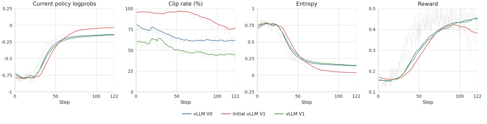
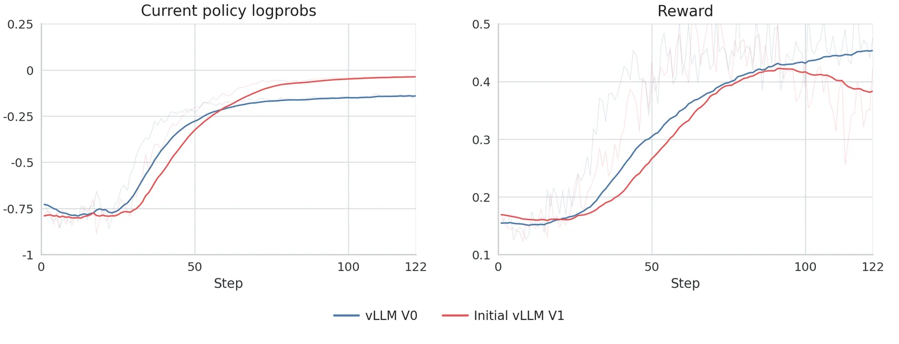

Системы онлайн-обучения с подкреплением — PPO, GRPO, GSPO и их аналоги — устроены так, что инференс-движок и тренер должны работать с одними и теми же распределениями вероятностей токенов. Движок генерирует последовательности (rollout) и возвращает логарифмические вероятности (логпробы); тренер использует их для вычисления policy ratio, KL-дивергенции, clip rate и итогового reward. Любое расхождение в том, как именно считаются эти логпробы, меняет динамику обучения — иногда незаметно, иногда катастрофически.
Именно с такой ситуацией столкнулась команда PipelineRL при миграции с vLLM 0.8.5 (V0) на vLLM 0.18.1 (V1). V1 — это фактически переписанный с нуля движок, и первые же запуски показали: кривые reward и логпробов на стороне тренера расходятся с V0-референсом уже в начале обучения. Clip rate — наиболее чувствительный индикатор разрыва между политикой rollout и политикой тренера — немедленно сигнализировал о проблеме.
| Проблема | Слой | Исправление |
|---|---|---|
| Логпробы до обработки (температура, top-k/p) | Семантика | logprobs-mode=processed_logprobs |
| Prefix caching переиспользует состояние до обновления весов | Инференс-путь | enable-prefix-caching: false |
| Асинхронное планирование — V1-дефолт, отличный от V0 | Инференс-путь | async-scheduling: false |
| Финальная проекция lm_head не в fp32 | Численная точность | fp32 lm_head для rollout-бэкенда |
Первоначальный соблазн состоял в том, чтобы скорректировать саму RL-целевую функцию. Команда намеренно отказалась от этого пути и вместо этого разобрала проблему на три слоя: семантическое несоответствие логпробов, расхождение в поведении инференс-пути и только затем — возможная необходимость корректировки алгоритма. Такой порядок диагностики оказался принципиальным.
Включённое по умолчанию prefix caching в V1 могло переиспользовать состояние, вычисленное до обновления весов модели.

Первая и наиболее очевидная причина — семантика логпробов. vLLM V1 по умолчанию возвращает логпробы из «сырых» выходов модели, до применения температурного масштабирования, штрафов повторений и top-k/top-p фильтрации. PipelineRL ожидал логпробы из обработанного распределения, которое фактически использовал сэмплер. Включение параметра `logprobs-mode=processed_logprobs` убрало систематическое смещение среднего в policy ratio: после этой правки отношение политик во всех трёх запусках держалось вблизи 1.0. Однако расхождение в clip rate, KL и энтропии сохранялось.
Вторая группа проблем — runtime-настройки по умолчанию. В ранних запусках V1 prefix caching и асинхронное планирование оставались в значениях по умолчанию для vLLM 0.18.1, тогда как V0-референс работал с другим поведением. Prefix caching сам по себе является корректной оптимизацией для статичной модели, но в онлайн-RL-сценарии веса обновляются во время обучения. Кэш может переиспользовать состояние, вычисленное до обновления весов, если политика инвалидации кэша не учитывает границу weight update. Для достижения паритета оба параметра были явно отключены: `enable-prefix-caching: false`, `async-scheduling: false`.
Третья проблема касалась синхронизации весов во время обучения (inflight weight updates). V0 фактически блокировал выполнение на границе обновления, загружал новые веса и возобновлял работу без явной инвалидации кэшированного состояния. Для V1 потребовалось явно воспроизвести это поведение через `engine.pause_generation(mode="keep", clear_cache=False)` с последующим `collective_rpc_async` для получения обновлённых весов и `resume_generation()`. Параметр `mode="keep"` точнее соответствует старой модели inflight-обновлений, чем режимы `wait` или `abort`. Диагностическим сигналом служил lag — количество шагов, на которое веса rollout-сервера отставали от политики тренера: в исправленном V1-запуске этот показатель был существенно ниже.
Четвёртая и последняя причина — точность вычислений в финальном слое проекции (lm_head). Тренер использовал fp32 для финальной проекции логитов; rollout-бэкенд должен был воспроизвести то же поведение. Схожая проблема описана в техническом отчёте MiniMax-M1: их RL-запуск показал расхождение вероятностей токенов между обучением и инференсом, которое было отслежено до выходного слоя и устранено переводом head в fp32. Статья ScaleRL включает fp32-вычисление логитов в базовый рецепт крупномасштабного RL и отдельно абляционно подтверждает его значимость. Малые расхождения в логитах напрямую транслируются в policy ratio и KL, поэтому точность финальной проекции входит в понятие корректности для онлайн-RL.

После всех четырёх исправлений финальный V1-запуск воспроизвёл траекторию V0-референса по clip rate, KL, энтропии и reward. Принципиальный вывод работы: при миграции инференс-движка в RL-системе необходимо сначала добиться паритета на уровне бэкенда и только затем оценивать изменения в целевой функции. Иначе правки алгоритма будут компенсировать инфраструктурные баги, а не решать реальные задачи обучения.